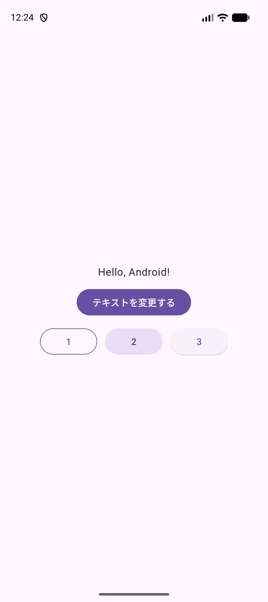
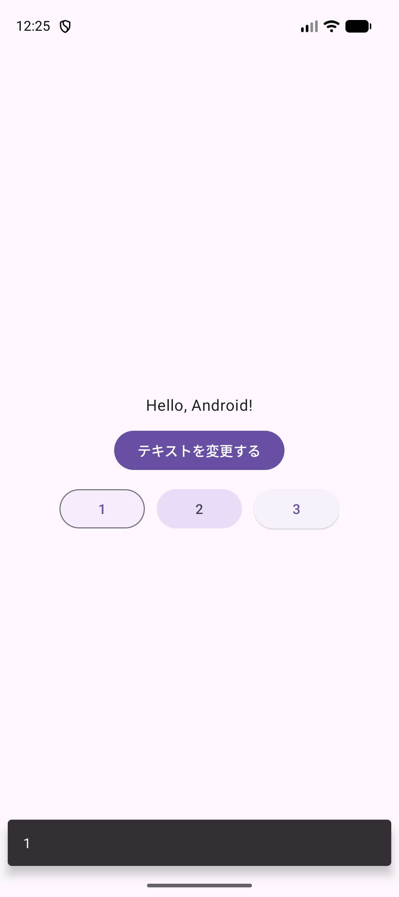
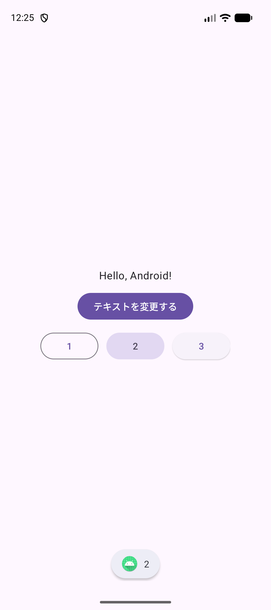

KOTLIN PROGRAMMING EXERCISES / A01
Kotlinで
画面を動かそう
XMLに置いた部品をKotlinから取得し、ボタンを押した結果を画面に出します。使うIDEはAndroid Studioです。
対象：A01HelloAndroid / パッケージ：jp.ac.jec.a01helloandroid
7〜8コマ目・各90分 / Android Studio Panda 2 / macOS
この単元で作るもの
文字を変更するボタンと、Snackbar・Toastを出すボタンがあるアプリ。各STEPを上から進めます。比較欄のJava／Swiftは読むためのもので、Kotlinのファイルには貼りません。
Android Studioを開く
今回は Android Studio を使います。作るプロジェクトは A01HelloAndroid、実行先は jec_25cm_kotlin_Pixel 9a です。7コマ目で画面を作り、8コマ目でボタンを押したときの動きを書きます。
- Finderの「アプリケーション」から Android Studio を開きます。
- Welcome画面の版を見ます。この教科書の基準は
Panda 2です。違う版なら、作り始める前に先生に画面を見せます。 - ブラウザには、この教科書を開いたままにします。
完成すると「テキストを変更する」で見出しが変わり、「1」でSnackbar、「2」でToastが出ます。「3」は見た目を比べるためのボタンで、処理は付けません。
Javaではどう書くか
Kotlin
override fun onCreate(savedInstanceState: Bundle?) {
super.onCreate(savedInstanceState)
}Java
@Override
protected void onCreate(Bundle savedInstanceState) {
super.onCreate(savedInstanceState);
}POINT
Androidでは自分で main を呼びません。Androidが画面を準備するときに onCreate を呼びます。継承したメソッドを置き換える点はJavaと同じです。この比較は読むだけで、まだ入力しません。
ここで止まって確認
できたらチェックします。止まったときは、この画面を先生に見せましょう。
自分のプロジェクトを作る
- Welcome画面の New Project を選びます。プロジェクトが開いている場合は File → New → New Project… です。
- Phone and Tablet → Empty Views Activity → Next の順に選びます。
Empty ActivityはCompose用なので、今回は選びません。 - 次の表のとおり入力して、Finish を押します。
| 項目 | 入力・選択 |
|---|---|
| Name | A01HelloAndroid |
| Package name | jp.ac.jec.a01helloandroid |
| Save location | /Users/ユーザ名/Documents/Kotlin/A01HelloAndroid |
| Language | Kotlin |
| Minimum SDK | API 31（Android 12） |
| Build configuration language | Kotlin DSL (build.gradle.kts) |
ユーザ名 はMacの自分の名前に置き換えます。Save locationにはプロジェクト名まで含めます。最初のGradle同期には通信が必要です。Macから「書類」へのアクセスを聞かれたら、自分のプロジェクトを読むために許可します。
授業で使うライブラリの版をそろえる
同じPanda 2でも、作成日によってライブラリの版が変わります。左のProjectツールウィンドウの表示を Project に切り替え、gradle → libs.versions.toml を開き、内容全体を次で置き換えます。これはKotlinのコードではなく、使う部品と版を指定する設定です。
[versions]
agp = "9.1.1"
coreKtx = "1.17.0"
junit = "4.13.2"
junitVersion = "1.3.0"
espressoCore = "3.7.0"
appcompat = "1.8.0"
material = "1.14.0"
activity = "1.13.0"
constraintlayout = "2.2.2"
[libraries]
androidx-core-ktx = { group = "androidx.core", name = "core-ktx", version.ref = "coreKtx" }
junit = { group = "junit", name = "junit", version.ref = "junit" }
androidx-junit = { group = "androidx.test.ext", name = "junit", version.ref = "junitVersion" }
androidx-espresso-core = { group = "androidx.test.espresso", name = "espresso-core", version.ref = "espressoCore" }
androidx-appcompat = { group = "androidx.appcompat", name = "appcompat", version.ref = "appcompat" }
material = { group = "com.google.android.material", name = "material", version.ref = "material" }
androidx-activity = { group = "androidx.activity", name = "activity", version.ref = "activity" }
androidx-constraintlayout = { group = "androidx.constraintlayout", name = "constraintlayout", version.ref = "constraintlayout" }
[plugins]
android-application = { id = "com.android.application", version.ref = "agp" }
表示される Sync Now を押します。出ない場合は File → Sync Project with Gradle Files で同期します。進行表示が消えるまで待ちます。赤いエラーが残るときは先へ進まず、内容を先生に見せます。
この手順はPanda 2用です。別の版で生成したプロジェクトに、この設定だけを入れて版を下げないでください。ほかの設定の書き方も違う場合があります。
Javaではどう書くか
Kotlin
package jp.ac.jec.a01helloandroid
class MainActivity : AppCompatActivity()Java
package jp.ac.jec.a01helloandroid;
public class MainActivity extends AppCompatActivity {
}POINT
Kotlinの継承は :、Javaは extends です。AppCompatActivity() の () は親のコンストラクタを呼ぶ形です。パッケージ名はファイルの所属を表し、画面に出すアプリ名とは別です。
ここで止まって確認
できたらチェックします。止まったときは、この画面を先生に見せましょう。
実行するエミュレータを用意する
- Tools → Device Manager を開きます。
jec_25cm_kotlin_Pixel 9aが既にあれば、その行の起動ボタンを押します。新しく同名端末を作る必要はありません。- なければ ＋ → Create Virtual Device（または Create Device）を選び、Phoneの一覧から Pixel 9a を選びます。
- システムイメージは先生が教室で指定したものを選びます。アプリのMinimum SDKはAPI 31なので、それ以上が必要です。画像の授業用端末はAPI 37.1です。画面に候補がなければ、独自に別の機種や版を選ばず先生に見せます。
- ダウンロードが必要なら完了を待ち、端末の名前を
jec_25cm_kotlin_Pixel 9aにします。Pixelと9aの間は半角スペースです。 - 作成を完了して起動します。Androidのホーム画面が出るまで待ちます。
MacのCPUに合うイメージを使います。Apple Siliconは arm64-v8a、Intel Macは x86_64 です。見つからない項目や利用規約の画面は先生と確認してください。初回のダウンロードが長い場合は、先生の端末で画面を確認してから、指示されたところまで進めます。
Java／Swiftとの比較
Kotlin / Android
Android Studioの実行先でAVDを選びます。Kotlinの文法ではなく、アプリを動かす端末の設定です。
Java / Android
Javaで同じAndroidアプリを書いても、同じDevice ManagerとAVDを使います。
Swift / iOS
XcodeでSimulatorを実行先に選ぶ操作に相当します。端末名やOSのイメージはAndroidと別です。
POINT
プロジェクト名と端末名は別です。A01HelloAndroid を作り、jec_25cm_kotlin_Pixel 9a で動かします。
ここで止まって確認
できたらチェックします。止まったときは、この画面を先生に見せましょう。
生成されたアプリをRunする
- 上部の実行設定で app、実行先で
jec_25cm_kotlin_Pixel 9aを選びます。 - 緑の Run ▶ を押し、ビルドとインストールが終わるまで待ちます。
- エミュレータに
Hello World!が出たことを確かめます。この段階ではボタンはありません。 - 左の表示を Android にして、
app → kotlin+java（またはjava）→ jp.ac.jec.a01helloandroid → MainActivityを開きます。Project表示ならapp/src/main/java/jp/ac/jec/a01helloandroid/MainActivity.ktです。
この中の setContentView(R.layout.activity_main) が、app/src/main/res/layout/activity_main.xml を画面として使う指定です。上の super.onCreate と、enableEdgeToEdge・ViewCompat.setOnApplyWindowInsetsListener の部分は残します。ステータスバーや画面下端と内容が重ならないための生成コードです。
Javaではどう書くか
Kotlin
setContentView(R.layout.activity_main)Java
setContentView(R.layout.activity_main);POINT
同じAndroid APIを呼ぶので、JavaからKotlinへ変わってもXMLの名前は同じです。R はビルドで作られる参照用の名前で、自分で R というファイルは作りません。
ここで止まって確認
できたらチェックします。止まったときは、この画面を先生に見せましょう。
XMLで文字とボタンを並べる
app → res → layout → activity_main.xmlを開きます。- エディタ右上の Code を選びます。アイコンだけの場合は、マウスを重ねてCodeを探します。
- 内容全体を次のXMLで置き換えます。
MainActivity.ktには貼りません。
<?xml version="1.0" encoding="utf-8"?>
<LinearLayout xmlns:android="http://schemas.android.com/apk/res/android"
xmlns:tools="http://schemas.android.com/tools"
android:id="@+id/main"
android:layout_width="match_parent"
android:layout_height="match_parent"
android:gravity="center"
android:orientation="vertical"
tools:context=".MainActivity">
<TextView
android:id="@+id/text"
style="@style/TextAppearance.Material3.BodyLarge"
android:layout_width="wrap_content"
android:layout_height="wrap_content"
android:text="Hello World!" />
<Button
android:id="@+id/button"
android:layout_width="wrap_content"
android:layout_height="wrap_content"
android:layout_marginTop="12dp"
android:text="テキストを変更する" />
<LinearLayout
android:layout_width="wrap_content"
android:layout_height="wrap_content"
android:layout_marginTop="12dp"
android:orientation="horizontal">
<Button
android:id="@+id/btn1"
style="@style/Widget.Material3.Button.OutlinedButton"
android:layout_width="wrap_content"
android:layout_height="wrap_content"
android:text="1" />
<Button
android:id="@+id/btn2"
style="@style/Widget.Material3Expressive.Button.TonalButton"
android:layout_width="wrap_content"
android:layout_height="wrap_content"
android:layout_marginHorizontal="12dp"
android:text="2" />
<Button
style="@style/Widget.Material3.Button.ElevatedButton"
android:layout_width="wrap_content"
android:layout_height="wrap_content"
android:text="3" />
</LinearLayout>
</LinearLayout>- Runを押して、見出し・変更ボタン・1〜3のボタンが出ることを確認します。
- まだ処理は書いていないので、押しても見出しやメッセージは変わりません。
| 設定 | この画面での役割 |
|---|---|
orientation="vertical" | 外側で上から順に並べる。内側のhorizontalは1〜3を横に並べる。 |
match_parent / wrap_content | 親の領域を使う／内容に必要な大きさにする。 |
gravity="center" | 中の部品を中央に置く。 |
12dp | 部品の間隔。密度が違う端末でも大きさをそろえる単位。 |
style | ライブラリにある見た目を指定する。1〜3の違いもここで作る。 |
Java／Swiftとの比較
Kotlin / Android
見た目はXML、動きはKotlinに書きます。@+id/text が部品に付けた名前です。
Java / Android
このXMLを変更せずに使えます。XMLはKotlin専用ではありません。
Swift / UIKit
Storyboardで部品を配置する役割に近いですが、ここではXMLを文字で編集します。接続の方法は次のSTEPで書きます。
POINT
外側の android:id="@+id/main" は生成された余白処理が使います。text・button・btn1・btn2 も、次のKotlinの名前と1文字ずつ合わせます。
ここで止まって確認
できたらチェックします。止まったときは、この画面を先生に見せましょう。
XMLの部品をKotlinから取得する
MainActivity.kt を開きます。onCreate 内の余白処理を閉じる })（生成直後なら }）のあとに、次の4行を追加します。onCreate を閉じる最後のかっこの手前です。
val text: TextView = findViewById(R.id.text)
val button: Button = findViewById(R.id.button)
val btn1: Button = findViewById(R.id.btn1)
val btn2: Button = findViewById(R.id.btn2)TextView と Button が赤くなったら、ファイル上部のimportに次を足します。同じimportは重ねて書きません。
import android.widget.Button
import android.widget.TextViewRunして同じ画面が出ることを確かめます。findViewById は表示済みの部品を取得するだけなので、まだ押したときの動きはありません。
Javaではどう書くか
Kotlin
val text: TextView = findViewById(R.id.text)Java
TextView text = findViewById(R.id.text);SwiftのUIKitで IBOutlet をつないでラベルを参照する役割に近い処理です。AndroidではXMLのidを指定して取得します。val は参照の入れ替えを止めますが、参照したViewの文字は変更できます。
POINT
順番は setContentView → findViewById です。XMLを読み込む前に部品を探さないようにします。
ここで止まって確認
できたらチェックします。止まったときは、この画面を先生に見せましょう。
7コマ目の完成状態を確認する
最後の3分です。XMLに main・text・button・btn1・btn2 があり、Kotlinに4つの findViewById があることを確認します。Runして、見出しと4つのボタンを見ます。
Javaではどう書くか
Kotlin
val btn1: Button = findViewById(R.id.btn1)Java
Button btn1 = findViewById(R.id.btn1);POINT
次回は同じ Documents/Kotlin/A01HelloAndroid を開きます。新規作成はしません。書いた内容はAndroid Studioが保存します。
ここで止まって確認
できたらチェックします。止まったときは、この画面を先生に見せましょう。
8コマ目：前回のプロジェクトを開く
- Android Studioの最近使ったプロジェクトから
A01HelloAndroidを開きます。なければ Open でDocuments/Kotlin/A01HelloAndroidを選びます。 - 実行先を
jec_25cm_kotlin_Pixel 9aにしてRunします。 - 見出しと4つのボタンを確認し、
MainActivity.ktを開きます。
Javaではどう書くか
Kotlin
val button: Button = findViewById(R.id.button)Java
Button button = findViewById(R.id.button);POINT
前回取得した button に、今回はクリックの処理を付けます。部品をもう一度作ったり、同じidをもう一度取得したりはしません。
ここで止まって確認
できたらチェックします。止まったときは、この画面を先生に見せましょう。
ボタンを押したら文字を変える
onCreate の4つのView取得のあとに、次を足します。まだLogの行は書きません。
button.setOnClickListener({ v ->
text.text = "Hello, Android!"
})- Runします。
- 「テキストを変更する」を押します。見出しが
Hello, Android!に変わります。 - もう一度押しても同じ文字です。
text.textに同じ値を入れているためです。

Javaではどう書くか
Kotlin
button.setOnClickListener({ v ->
text.text = "Hello, Android!"
})Java
button.setOnClickListener(v -> {
text.setText("Hello, Android!");
});{ v -> … } はクリックされたときに実行するラムダです。v は押されたViewです。この処理では使いませんが、次のSnackbarで使います。Swiftのボタンのアクションにクロージャを渡す考え方にも対応します。
POINT
KotlinではJavaの setText を text.text = … と書けます。ラムダは登録した時点では動かず、ボタンが押されたときに動きます。
ここで止まって確認
できたらチェックします。止まったときは、この画面を先生に見せましょう。
SnackbarとToastで結果を出す
button のクリック処理を閉じる }) のあと、onCreate の中に次の2つの処理を足します。上の処理の内側には入れません。
btn1.setOnClickListener({ v ->
val btn1Str = btn1.getText().toString()
Snackbar.make(v, btn1Str, Snackbar.LENGTH_SHORT).show()
})
btn2.setOnClickListener({ v ->
val btn2Str = btn2.getText().toString()
Toast.makeText(this, btn2Str, Toast.LENGTH_SHORT).show()
})import android.widget.Toast
import com.google.android.material.snackbar.Snackbar- Runして「1」を押します。画面下に
1のSnackbarが出て、しばらくすると消えます。 - 消えてから「2」を押します。
2のToastが出ます。OSによりアイコンや形が違う場合があります。 - 「3」を押します。処理を登録していないので、メッセージは出ません。


Javaではどう書くか
Kotlin
Snackbar.make(v, btn1Str, Snackbar.LENGTH_SHORT).show()
Toast.makeText(this, btn2Str, Toast.LENGTH_SHORT).show()Java
Snackbar.make(v, btn1Str, Snackbar.LENGTH_SHORT).show();
Toast.makeText(this, btn2Str, Toast.LENGTH_SHORT).show();getText() は文字の表示内容を返し、toString() で文字列にします。KotlinでもJavaのメソッドをそのまま呼べます。this はこの MainActivity、v は押したボタンです。SnackbarはViewを手がかりに表示先を探し、ToastにはContextとしてActivityを渡します。
POINT
メッセージを作っただけでは表示されません。最後の .show() まで書きます。利用者に知らせる結果は画面に出し、Logcatだけで済ませません。
ここで止まって確認
できたらチェックします。止まったときは、この画面を先生に見せましょう。
Logcatで処理の順番を見る
画面への表示は残したまま、開発中の確認用にLogcatへ文字を出します。上部に import android.util.Log を足します。
4つのView取得のあと、button.setOnClickListener の前に次の2行を足します。
val string = text.getText().toString()
Log.d("MainActivity", string)次は button のクリック処理の中です。text.text = "Hello, Android!" の直後に2行足します。
val updateString = text.getText().toString()
Log.d("MainActivity", updateString)- View → Tool Windows → Logcat を開きます。
- 端末に
jec_25cm_kotlin_Pixel 9aを選び、検索欄にpackage:jp.ac.jec.a01helloandroid tag:MainActivity level:DEBUGと入力します。 - 実行中ならStop（■）で止めてからRunします。最新の
Hello World!の行を確認します。 - 「テキストを変更する」を押し、最新の
Hello, Android!の行を確認します。
時刻やプロセス番号は毎回変わります。比べるのはメッセージの部分です。過去の実行の行が残っていたら、最新の時刻を見ます。
Javaではどう書くか
Kotlin
Log.d("MainActivity", updateString)Java
Log.d("MainActivity", updateString);POINT
外側のLogは画面の準備時、ラムダ内のLogはクリック時に出ます。Logcatは開発者向けです。アプリを使う人は画面の文字・Snackbar・Toastで結果を見ます。
ここで止まって確認
できたらチェックします。止まったときは、この画面を先生に見せましょう。
完成コードと照合する
MainActivity.kt の全文です。追加した処理の位置・import・かっこの対応を、自分のコードと照合します。足りない部分を直してRunします。迷ったときはファイル全体をこのコードにそろえられます。
package jp.ac.jec.a01helloandroid
import android.os.Bundle
import android.util.Log
import android.widget.Button
import android.widget.TextView
import android.widget.Toast
import androidx.activity.enableEdgeToEdge
import androidx.appcompat.app.AppCompatActivity
import androidx.core.graphics.Insets
import androidx.core.view.ViewCompat
import androidx.core.view.WindowInsetsCompat
import com.google.android.material.snackbar.Snackbar
class MainActivity : AppCompatActivity() {
@Override
override fun onCreate(savedInstanceState: Bundle?) {
super.onCreate(savedInstanceState)
enableEdgeToEdge()
setContentView(R.layout.activity_main)
ViewCompat.setOnApplyWindowInsetsListener(findViewById(R.id.main), { v, insets ->
val systemBars: Insets = insets.getInsets(WindowInsetsCompat.Type.systemBars())
v.setPadding(systemBars.left, systemBars.top, systemBars.right, systemBars.bottom)
insets
})
val text: TextView = findViewById(R.id.text)
val button: Button = findViewById(R.id.button)
val btn1: Button = findViewById(R.id.btn1)
val btn2: Button = findViewById(R.id.btn2)
val string = text.getText().toString()
Log.d("MainActivity", string)
button.setOnClickListener({ v ->
text.text = "Hello, Android!"
val updateString = text.getText().toString()
Log.d("MainActivity", updateString)
})
btn1.setOnClickListener({ v ->
val btn1Str = btn1.getText().toString()
Snackbar.make(v, btn1Str, Snackbar.LENGTH_SHORT).show()
})
btn2.setOnClickListener({ v ->
val btn2Str = btn2.getText().toString()
Toast.makeText(this, btn2Str, Toast.LENGTH_SHORT).show()
})
}
}@Override はJava由来の注釈です。Kotlinでオーバーライドを示すのは override キーワードで、ここでは見本の書き方をそのまま残しています。余白処理の Insets は4辺の値を持ちます。この単元では生成部分の役割だけ確認し、仕組みの全体は扱いません。
Javaではどう書くか
Kotlin
val string = text.getText().toString()
text.text = "Hello, Android!"Java
String string = text.getText().toString();
text.setText("Hello, Android!");POINT
XMLの id とKotlinの R.id が一致していることが接続の条件です。見本の text・button・btn1・btn2 は名前を変えずに比較します。
ここで止まって確認
できたらチェックします。止まったときは、この画面を先生に見せましょう。
自分で変えられる場所を試す
ここまでに扱った場所から、1つ選んで変更します。先に元の文字や数値を控え、1か所変えるごとにRunします。次の例と同じにする必要はありません。
| 変える場所 | 例 | 変わるもの |
|---|---|---|
XMLのTextViewの android:text | Hello World! を自分のあいさつにする | 起動時の見出しと起動時のLog。 |
Kotlinの text.text = … | Hello, Android! を別の言葉にする | 変更ボタンを押したあとの見出しとLog。 |
XMLのbtn1・btn2の android:text | 1・2 を短い言葉にする | ボタンの表示と、そのボタンから出すメッセージ。 |
XMLの layout_marginTop | 12dp を 24dp にする | 縦の間隔。 |
idやパッケージ名は変えません。たとえばbtn1の文字だけを変えると、getText() がその文字を読むので、Snackbarの文言も一緒に変わります。
Javaではどう書くか
Kotlin
val btn1Str = btn1.getText().toString()
Snackbar.make(v, btn1Str, Snackbar.LENGTH_SHORT).show()Java
String btn1Str = btn1.getText().toString();
Snackbar.make(v, btn1Str, Snackbar.LENGTH_SHORT).show();比較できる状態に戻す
変えたところを元に戻し、RunしてSTEP 11の動きに戻ることを確かめます。自分のアレンジは、あとで選んで続けられます。提出で使うときは、サイドバーの「共通：提出課題とAPK」に、コピーと提出の手順があります。
POINT
XMLの初期表示とKotlinで押したあとに代入する文字は別です。どちらを変えたかによって、変化するタイミングが違います。
ここで止まって確認
できたらチェックします。止まったときは、この画面を先生に見せましょう。
8コマ目の完成状態を確認する
最後の3分です。Stop→Runで開き直し、次の順に確認します。
- 見出しが
Hello World!。 - 変更ボタンで
Hello, Android!。 - 「1」でSnackbar、「2」でToast。
- Logcatにも起動時と変更後の文字が出る。
Javaではどう書くか
Kotlin
text.text = "Hello, Android!"Java
text.setText("Hello, Android!");POINT
アレンジを続けるときの入り口はSTEP 12の表です。自分が作った Documents/Kotlin/A01HelloAndroid を使います。完成見本をそのまま提出する形にはしません。
ここで止まって確認
できたらチェックします。止まったときは、この画面を先生に見せましょう。
完成プロジェクトを開く
見本は、配布した教材のフォルダ内の samples/A01HelloAndroid に展開済みです。Android Studioの Open で、app ではなく A01HelloAndroid フォルダを選びます。別のウィンドウで開き、Gradle同期を待って指定AVDでRunします。
比較が終わったら、自分で作った Documents/Kotlin/A01HelloAndroid に戻ります。見本は初回から参照して構いません。
見本のフォルダがない配布形態では、完成プロジェクトZIPを受け取り、展開したフォルダをOpenします。
困ったとき
| 起きたこと | 確かめる場所 |
|---|---|
| activity_main.xmlがない | Empty ActivityではなくEmpty Views Activityを選んだか確認。作り直す前に先生に見せます。 |
| Gradle同期が終わらない／赤い | 通信とSTEP 01の設定。別のStudio版なら設定を次々変えず、エラーの先頭を先生に見せます。 |
| 実行先がない | STEP 02のDevice Managerで指定AVDを起動します。 |
| R.idが赤い | XMLのidとつづりを合わせます。XML側の赤いエラーも先に直します。別のRをimportしません。 |
| 起動直後に閉じる | setContentViewより後でViewを取得したか、mainのidを残したか確認します。Logcatの赤い行を先生に見せます。 |
| 文字が変わらない | buttonのクリック処理がonCreate内で、ほかのクリック処理の外にあるか確認。Runして最新のコードを端末に入れます。 |
| Snackbar／Toastが出ない | 1または2を押したか、show()まで書いたか確認。3には処理を付けていません。 |
| Logcatに出ない | STEP 10の端末と検索欄を確認し、Stop→Runとクリックをやり直します。 |
| 黄色い注意が出る | エラーと区別し、該当行を先生に見せます。Suppressで隠しません。未使用のvやXMLの文字を直接書くことへの提案は、教材の完成コードにもある書き方です。 |
質問するときは、教材フォルダの VERSION.json にある版とSTEP番号を伝えます。